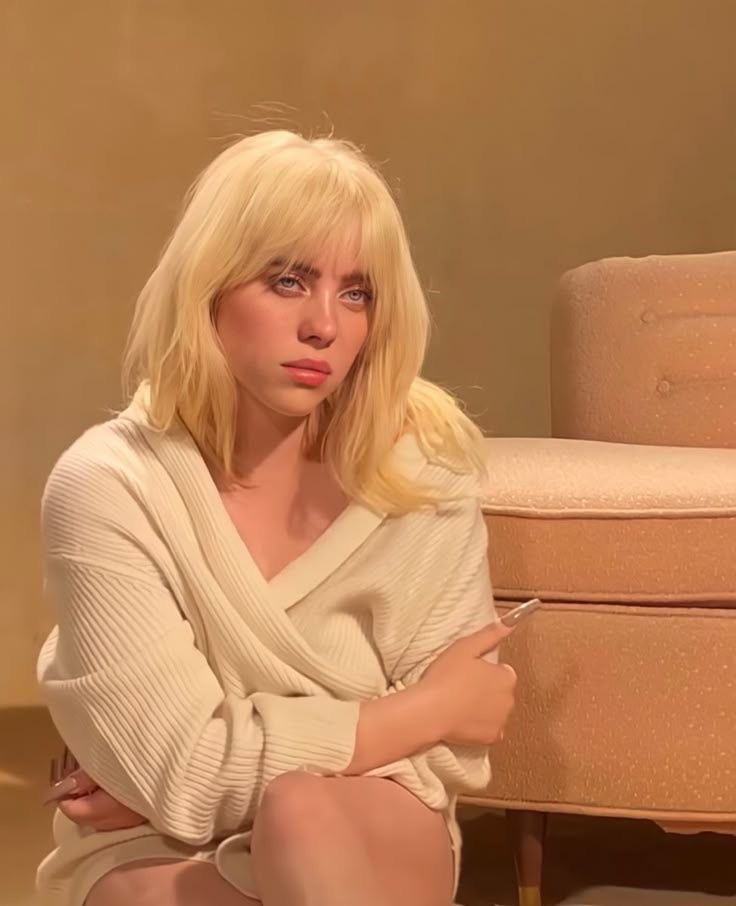

Billie Eilish
Cantante y compositora estadounidense conocida por su estilo íntimo, oscuro y experimental. Saltó a la fama con “Ocean Eyes” y consolidó su carrera con el álbum “WHEN WE ALL FALL ASLEEP, WHERE DO WE GO?”. Ha ganado dos Premios Oscar por “No Time To Die” (2022) y “What Was I Made For?” (2024), siendo la persona más joven en lograrlo. Su música mezcla pop alternativo, electrónica suave y letras muy emocionales.